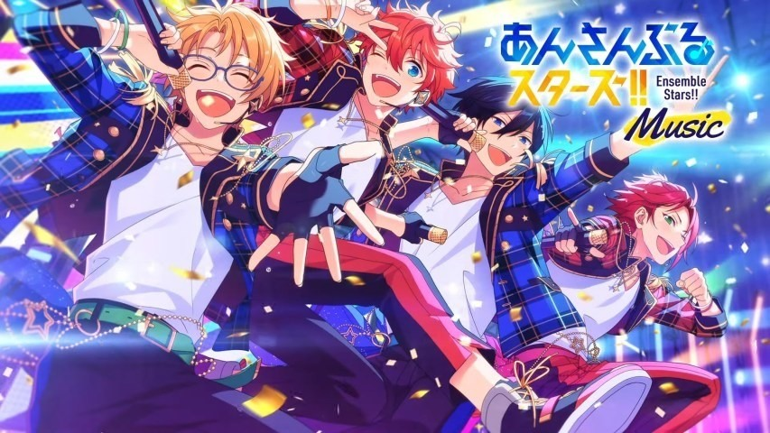
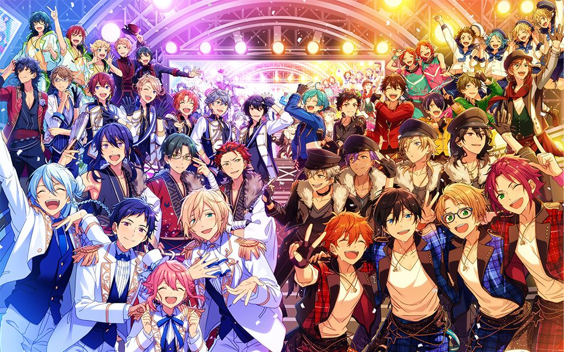
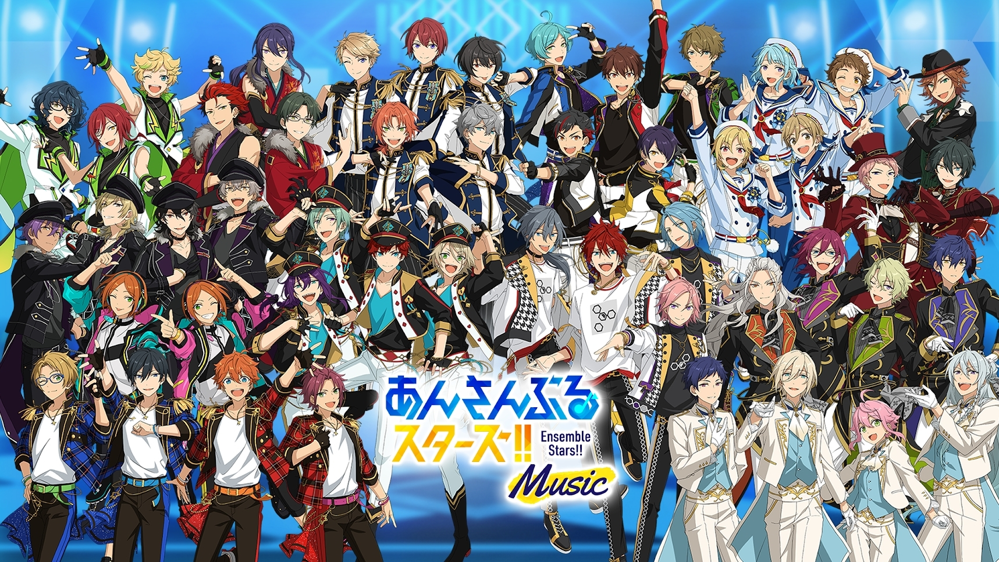
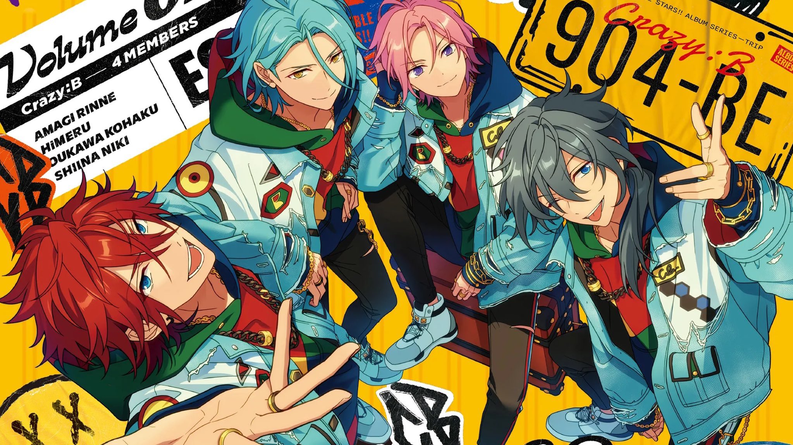
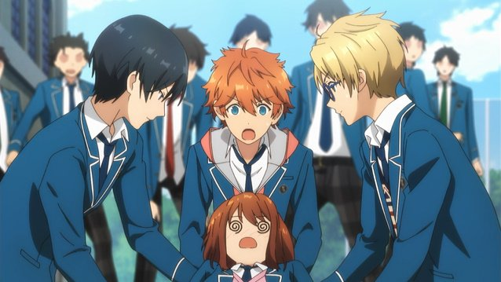
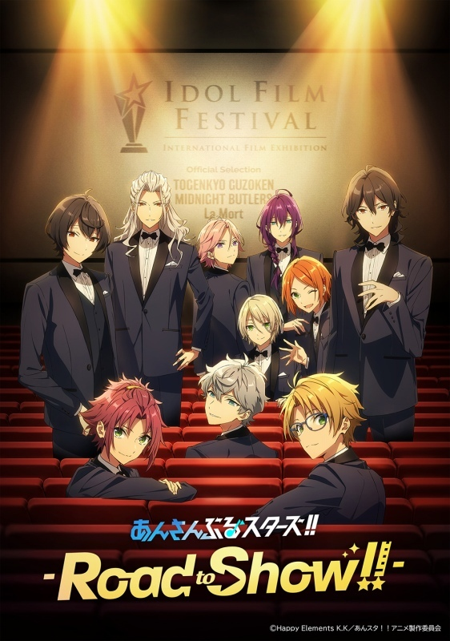
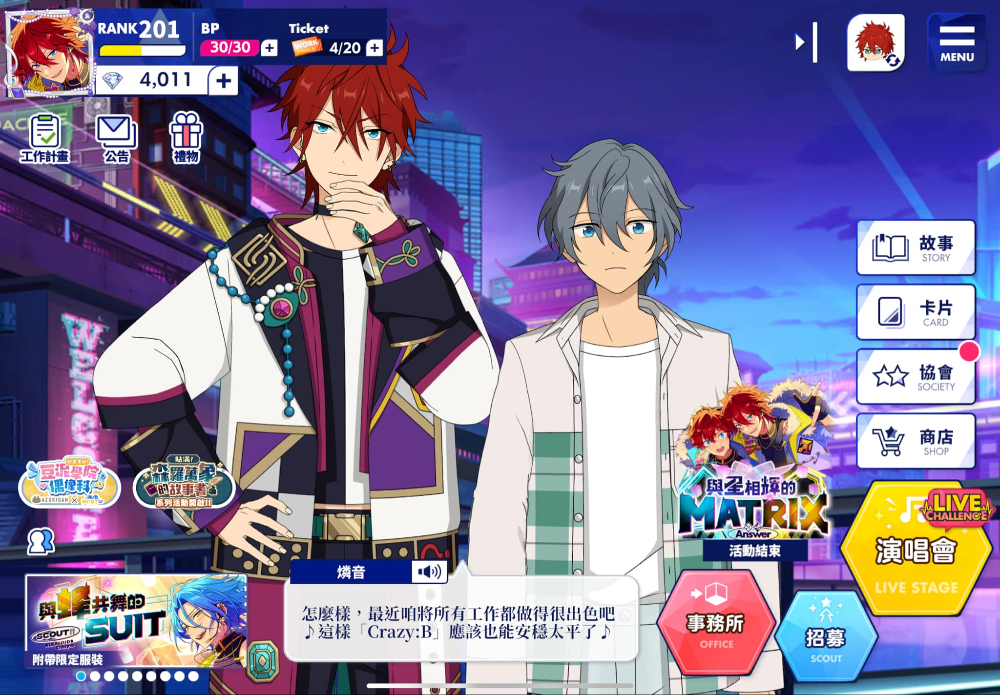
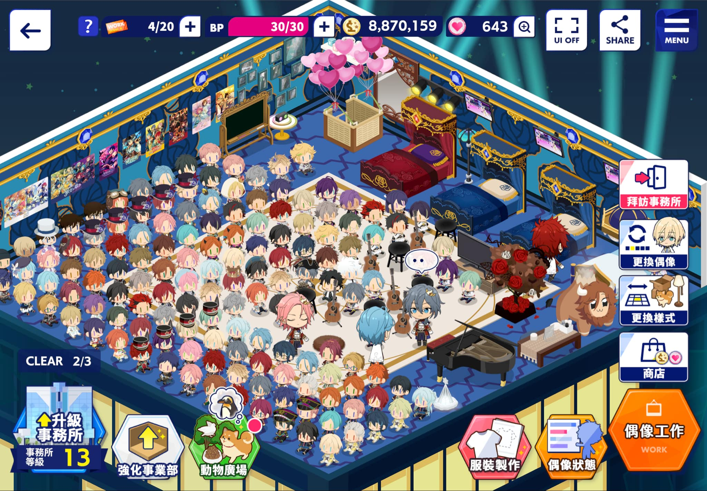
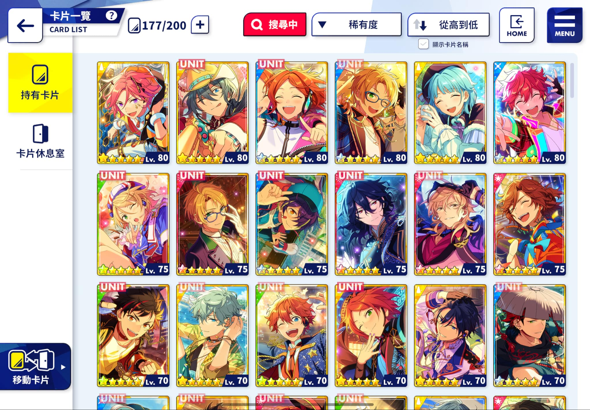
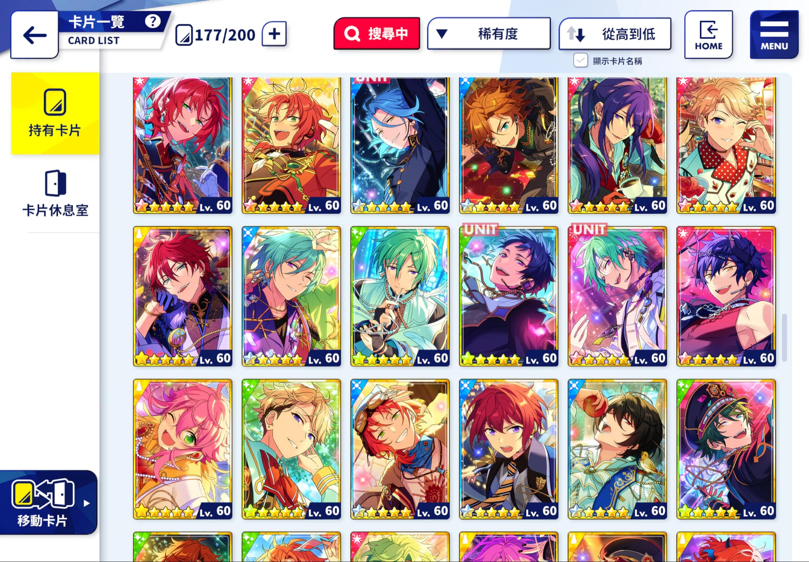

是由樂元素旗下Happy Elements K.K.所製作的一款偶像養成類手機遊戲。遊戲圍繞「青春、偶像」等主題，玩家將扮演一名精明幹練的女性
『製作人』，與十四個風格各異的偶像團體的成員一起展開一場精彩無比的偶像之路。作品中的時間線分為兩個階段， 包括講述夢之咲學院生
活的『！』時期與ES生活的『！！』時期，主要腳本由輕小說作家日日日所擔任寫作，其他故事亦有由結城由乃、ゆーます與Happy Elements
K.K.旗下作家等參與寫作。遊戲採用了live2D技術讓人物更加生動，同時聲優陣容十分華麗。後續衍伸出大量媒體展開作品，包括輕小說 漫
畫、動畫、舞台劇（あんステ）等內容，並推出聲優演唱會（スタステ、スタフォニ）與角色3DCG演唱會（スタライ）等音樂性質實體活動。
這是款節奏遊戲
第一部主線講述，轉校生的同班同學所屬的『Trickstar』，因不滿學生會所設立的『夢幻祭』制度，進而引起的革命。最後，『Tri
ckstar』在其他團體的幫助下，成功與學生會長——天祥院英智所屬的『fine』在【DDD】上一戰，並取得勝利，獲得『SS』的學園代
表出賽權。
あんさんぶるスターズ！
第二部主線講述，『Trickstar』分別在【Summer Live】、【Autumn Live】與『Eve』和『Adam』的相遇。在過程中，『Trickst
ar』近一步認識了自己的優點和缺點，並逐漸了解到偶像界的過去。在夢之咲學院的夥伴支援下，他們挑戰了『SS』的大舞台，但與
此同時，由『Adam』與『Eve』兩者合併而成的『Eden』其所屬的『COSMIC PRODUCTION』正策劃著揭露過去的『明星事件』，企圖
打擊『Trickstar』，但在夥伴們的陪伴下，他們依然在『SS』上拿下優勝，締造了『奇蹟』。
あんさんぶるスターズ！！
『！』一年後的故事，延續『！』中『Link♪從這裡開始的交響曲』中講述以夢之咲學院的畢業生為中心，在名為『Ensemble Square』
的新環境下，加入四間不同的事務所，使ES成為偶像界的發展中心。玩家（通稱『製作人』）將加入以培訓輔佐偶像的中立機構——『P機
關』，為偶像提供各方面支援。
！！主要圍繞的兩個新團體 上圖是Crazy:B (這是我推)
主線講述，隸屬於『STARMAKER PRODUCTION』，以天城一彩為首被稱為『差等生』的四人成立了團體『ALKALOID』，被天祥
院英智告知若不好好交些成績便會解僱他們為故事展開，並與另一群被稱作ES『問題生』的偶像團體——『Crazy:B』開始一場席捲
ES的風暴。
.jpg) ！！主要圍繞的兩個新團體 上圖是ALKALOID (這是我副推) 這兩個團體的隊長是兄弟關係
！！主要圍繞的兩個新團體 上圖是ALKALOID (這是我副推) 這兩個團體的隊長是兄弟關係
第二部主線講述，如期於年末舉行的偶像界盛事『SS』，這次將會在日本各地舉辦『預選賽』，通過預選賽的團體則可晉級『決賽』
。ES的偶像們將各自作為競爭對手在各地上演一場激烈的演唱會對決。不過，此時卻出現了一名自稱『守門人』的男子，誓言將作為
『門衛』審視偶像們是否具備偶像的價值。
-あんさんぶるスターズ 電視動畫-
簡介
在2015年12月4日撥出之ニコニコ生放送『ハピエレ公式生放送〜重大発表祭 冬の陣〜』中宣布動畫及舞台化。2015年10月號開始在月刊
雜誌『ARIA』（講談社）中連載，由紗與イチ作畫。2017年2月已公告動畫延期播出。動畫由GENCO製作。出版商為Frontier Works。20
19年1月13日宣布動畫預定於同年7月播出，改由David Production製作。
劇中片段畫面截圖
-あんさんぶるスターズ Road to Show!!劇場版-
以手機遊戲為原著改編的動畫《偶像夢幻祭》劇場版《偶像夢幻祭 -Road to Show!!-》，釋出了搭配主題曲剪輯的預告宣傳影片，動畫預計
3 月 4 日在日本上映。《偶像夢幻祭》故事以擅長培育男子偶像的「私立夢之咲學院」為舞臺，遊戲中的玩家扮演轉學進新成立之「製作人科系」的女學生，
與男子高中生們一起朝向頂尖偶像的目標邁進。而本次的劇場版故事有與手機遊戲連動，偶像們將前進美國紐約，參加偶像電影活動「Idol Film Fes
tival」。
あんさんぶるスターズ Road to Show!!劇場版 電影海報
-最後的最後偷偷丟我的遊戲截圖-

我可是玩到201等了呢   